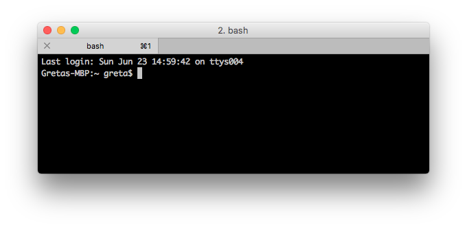

Command line
Text preparation
Titolo scuola
University of Poitiers
12 February 2020
Twitter: #enexdi2020
Greta H. Franzini
Overview
Theory
- What is the command line
- Command line for NLP
Practice
- Text preparation
- Lexical richness
Theory
Command line
Also known as "terminal" in Unix systems.
A user interface to per impartire comandi di elaborazione alla macchina
Command line
Why use it?
For NLP purposes, for instance:
- Text/data preparation with RegEx (Regular Expressions)
- Regular Expressions: sequence of symbols identifying un insieme di stringhe
- Launching NLP tools (e.g. TreeTagger)
- Interaction with small machines and servers
Text preparation
Rientrano:
- ...
- ...
Lexical richness
Rapporto fra l'ampiezza del vocabolario (type) e il numero totale di parole (token) nel testo.
RL = TTR
La TTR dello scritto è solitamente più alta del parlato.
- Rientra nell'analisi lessico-testuale. Applicazioni:
- Cambiamento linguistico nel tempo
- Studi di traduzione
- Acquisizione e sviluppo della lingua nei bambini
Lexical richness
Token vs. Type -- riprendi slide dallo slideset di NLP
Ricchezza lessicale
Nota come Type/Token Ratio (TTR)
Qualche idea su come si faccia?
(Types/Tokens) * 100 = N%
Più alta la ratio, più ricco/vario il lessico.
TTR alta: molti elementi lessicali diversi; alta percentuale delle parole ha un significato specifico
TTR bassa: poche parole specifiche usate, mentre quelle più generali sono frequenti
Cosa influisce sulla ricchezza del lessico?
Lexical richness
A che percentuale corrisponde una TTR alta/bassa?
Dipende!
- Un testo di 1000 token può avere una TTR del 40% (400 parole diverse)
- Uno di 3 milioni di token può avere una TTR del 5%
Più lungo il testo, più bassa la TTR.
Lexical richness
TTR adequate for texts of similar length
Se i testi che si vogliono confrontare hanno lunghezze diverse, meglio calcolare la standardised TTR (STTR): si divide il testo in chunk di 1000 parole, si calcola la TTR su ogni chunk e si fa la media dei valori ottenuti.
Practice
Esercizi
- Calcolo della ricchezza lessicale
- Due alchimisti italiani, Racconti storici e morali, di Cesare Cantù (1878)
- Pulizia di un file
- Testo fornito
Pratica
Calcolo della ricchezza lessicale
Calcolo della ricchezza lessicale
Nella CLI, spostati nella directory dove sono stati scaricati i due file di testo e apri il file:
cat cantu_due-alchimisti-italiani_1878.txt
greta$ cat cantu_due-alchimisti-italiani_1878.txtE.2: Calcolo della ricchezza lessicale
Minuscolizza tutto il testo:
tr '[:upper:]' '[:lower:]'
greta$ cat cantu_due-alchimisti-italiani_1878.txt | tr '[:upper:]' '[:lower:]'E.2: Calcolo della ricchezza lessicale
Trasforma la punteggiatura in un ritorno a capo:
tr '[:punct:]' '\n'
greta$ cat cantu_due-alchimisti-italiani_1878.txt | tr '[:upper:]' '[:lower:]' | tr '[:punct:]' '\n'E.2: Calcolo della ricchezza lessicale
Trasforma gli spazi in un ritorno a capo:
tr '[:space:]' '\n'
greta$ cat cantu_due-alchimisti-italiani_1878.txt | tr '[:upper:]' '[:lower:]' | tr '[:punct:]' '\n' | tr '[:space:]' '\n'E.2: Calcolo della ricchezza lessicale
Rimuovi tutte le righe vuote:
sed '/^\s*$/d'
greta$ cat cantu_due-alchimisti-italiani_1878.txt | tr '[:upper:]' '[:lower:]' | tr '[:punct:]' '\n' | tr '[:space:]' '\n' | sed '/^\s*$/d'E.2: Calcolo della ricchezza lessicale
Salva i risultati in un nuovo file:
> cantu_due-alchemisti-italiani_1878.txt.tokens
greta$ cat cantu_due-alchimisti-italiani_1878.txt | tr '[:upper:]' '[:lower:]' | tr '[:punct:]' '\n' | tr '[:space:]' '\n' | sed '/^\s*$/d' > cantu_due-alchemisti-italiani_1878.txt.tokensE.2: Calcolo della ricchezza lessicale
Calcola il numero totale di token:
wc -l cantu_due-alchemisti-italiani_1878.txt.tokens
greta$ wc -l cantu_due-alchemisti-italiani_1878.txt.tokensE.2: Calcolo della ricchezza lessicale
Apri il file dei tokens:
cat cantu_due-alchimisti-italiani_1878.txt.tokens
cat cantu_due-alchimisti-italiani_1878.txt.tokensE.2: Calcolo della ricchezza lessicale
Ordina i token alfabeticamente:
sort
cat cantu_due-alchimisti-italiani_1878.txt.tokens | sortE.2: Calcolo della ricchezza lessicale
Rimuovi i duplicati:
uniq -c
cat cantu_due-alchimisti-italiani_1878.txt.tokens | sort | uniq -cE.2: Calcolo della ricchezza lessicale
Salva i risultati in un nuovo file:
> cantu_due-alchimisti-italiani_1878.txt.types
cat cantu_due-alchimisti-italiani_1878.txt.tokens | sort | uniq -c > cantu_due-alchimisti-italiani_1878.txt.typesE.2: Calcolo della ricchezza lessicale
Calcola il numero totale di type:
wc -l cantu_due-alchemisti-italiani_1878.txt.types
greta$ wc -l cantu_due-alchemisti-italiani_1878.txt.typesE.2: Calcolo della ricchezza lessicale
Calcola la TTR:
(Types/Tokens) * 100 = N%
E.2: Calcolo della ricchezza lessicale
"Gradi" di TTR
Cos'è una percentuale bassa/media/alta?
E.2: Calcolo della ricchezza lessicale
Quiz: qual è la ricchezza lessicale delle seguenti opere e come la spieghi?
- Vulgata (date): 7% ()
- Promessi Sposi (date): 11% (225,991 token)
- Sallustio (date):
- Divina Commedia (date):
- Le Petit Prince (date):
- Faust (date):
- Winnie the Pooh (date):
E.2: Calcolo della ricchezza lessicale
Quiz: che TTR avranno...
- ...due traduzioni portoghesi letterali di Orgoglio e Pregiudizio?
- ...un testo plagiato rispetto a quello copiato?

Pratica
Text preparation
Poniamo di voler fare delle analisi linguistico-testuali su un testo digitalizzato disponibile online. Cosa facciamo?
- Scarichiamo il file
- Studiamo il file: cosa tenere, cosa rimuovere, cosa cambiare?
- Puliamo il più possibile in maniera automatica
- Formato
Text preparation
Caso studio: Testo (1926)
Text preparation
- Scarichiamo il file
- https://www.fadedpage.com/showbook.php?pid=20150606
- Studiamo il file: cosa tenere, cosa rimuovere, cosa cambiare?
- Rimozione invii a capo
- Rimozione ToC
- ...
- Puliamo il più possibile in maniera automatica
Removal of XML markup
To remove all XML tags from the file:
cat filename.xml | sed 's/\<[^<>]*\>//g' > filename.txtTokenisation
Dato un file di testo, produrre tokens e la loro frequenza (ordinati per frequenza decrescente)
tr 'A-Z' 'a-z' < INPUT-FILE.txt | tr -sc '[:alpha:]' '\n' | sort | uniq -c | sort -n -r > OUTPUT-FILE.txt- tr 'A-Z' 'a-z' trasforma maiuscole in minuscole
- tr -sc '[:alpha:]' '\n' trasforma tutto ciò che non è una lettera in un invio (new line)
- sort | uniq -c elenca alfabeticamente e conta ogni type
- sort -n -r elenca i conteggi (numericamente) in modo descrescente
UPPER CASE > lower case
Per trasformare una lista di file da maiuscolo in minuscolo:
for i in $(ls | grep [A-Z]); do mv -i $i `echo $i | tr 'A-Z' 'a-z'`; doneMixed commands
grep 'hello' filenameto extract all instances of a word in a fileegrep 'hello there' filenameto search for a specific string of texttail filenameto return the last 10 lines of the filetail -20 filenameto return the last 20 lines of the filehead filenameto return the first 10 lines of the filehead -20 filenameto return the first 20 lines of the file
Other commands
grep
greta$ cat file.txt | grep "ciao"grep
greta$ cat file.txt | grep "'finestra'"Invert matching con grep
Trova tutte le voci/righe che non contengono una stringa di testo o elemento.
greta$ cat file.txt | grep -v "agg."Trova tutto quello che non contiene la parola agg. (-v inverte i risultati)
Per cercare più elementi, aggiungere una -e al comando:
greta$ cat file.txt | grep -v -e "agg." -e "avv." -e "v." -e "indef." ...Comandi misti
grep 'hello' filenameto extract all instances of a word in a fileegrep 'hello there' filenameto search for a specific string of texttail filenameto return the last 10 lines of the filetail -20 filenameto return the last 20 lines of the filehead filenameto return the first 10 lines of the filehead -20 filenameto return the first 20 lines of the filetopto view all running processes on a machinedf"Disk Free", to reveal amount of storage space in the current directory
Resources
Tutorials
Mappa dei comandi
| Windows | Descrizione | Mac/Linux |
dir |
Mostra contenuti | ls |
cd |
Mostra posizione attuale | pwd |
cd path/to/directory |
Cambio directory | cd path/to/directory |
cd.. |
Indietro di una directory | cd .. |
cd |
Torna alla root directory | cd / |
mkdir nuovaCartella |
Crea una nuova cartella | mkdir nuovaCartella |
echo some-text > fileName(.txt) |
Crea un nuovo file | touch fileName(.txt) |
rmdir myFolder |
Rimuovi una cartella* | rmdir myFolder |
ren oldFolderName newFolderName |
Rinomina una cartella | mv oldFolderName newFolderName |
robocopy myFolder path/to/destination/directory |
Copia una cartella | cp -r myFolder path/to/destination/directory |
move myFolder path/to/destination/directory |
Sposta una cartella | mv myFolder path/to/destination/directory |
del myFile |
Rimuovi un file* | rm myFile |
ren oldFileName newFileName |
Rinomina un file | mv oldFileName newFileName |
copy myFile path/to/destination/directory |
Copia un file | cp myFile path/to/destination/directory |
move myFile path/to/destination/directory |
Sposta un file | mv myFile path/to/destination/directory |
cls |
Pulisci la schermata | clear |
type |
Apri un file | cat |
type C:/../myFile.txt| find "" /v /c |
Conta righe di un file | wc -l myFile(.txt) |
*ATTENZIONE: il comando di rimozione NON chiede conferma all'utente.